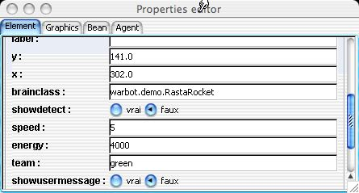
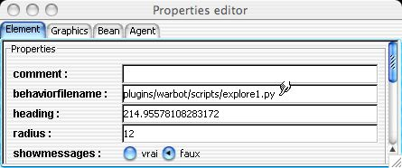

Vous êtes arrivé à exécuter
Warbot: bravo.
Vous êtes arrivé à exécuter
Warbot: bravo.
Vous avez du vous apercevoir qu'au bout d'un temps fini (peut-être long ;-), les deux bases ont été détruites.
Examinons donc, pour comprendre ce qui se passe, les comportements de nos agents. Pour cela, arrêtons la simulation par le bouton . Puis sélectionnons un agent sur la fenêtre Warbot, par exemple un tireur vert, et sélectionnons, en haut de la fenêtre Warbot, l'icone de la loupe . Nous voyons alors apparaitreune fenêtre permettant la visualisation et l'édition des propriétés de notre agent, notamment sa classe:

Les tireurs du type RastaRocket tirent sur tout ennemi passant à sa portée, et cherche à manger un hamburger près de lui. Son comportement est défini ici en java. Si nous regardons le source de leur comportement, nous constatons tout d'abord que c'est une sous classe de Brain, et que deux méthodes ont été définies dans leur cas:
Le comportement de notre tireur consiste alors à passer en revue tous les percepts. Pour chacun d'eux, il testera son type, par la méthode getPerceptType() qui renvoie une String donnant le type de l'objet perçu ("Home, "Food", "RocketLauncher", "Explorer",...), son camp, par la méthode getTeam() qui renvoie une String que l'agent peut comparer à son propre camp, tout cela pour décider s'il tire dessus, par un appel de la méthode launchRocket(...) ou s'il le mange, par un appel à la méthode eat().
Ce comportement n'est pas vraiment coopératif, mais on peut noter que notre agent ne fait rien si ce qu'il perçoit est de son camp. De plus, il n'envoie ni ne reçoit aucun message. Il suffirait donc de compléter ce comportement pour le rendre plus coopératif.
Intéressons nous maintenant à l'explorateur rouge. Sa fenêtre de propriété fait apparaitre une propriété supplémentaire:

Cet agent est défini en Python. Comme c'est un langage interprété, un fichier de script est associé à l'agent, dont la brainclass est PythonBrain. Editons ce fichier.
Là encore, nous remarquons que deux méthodes sont définies: activate() et doIt(). On note également une méthode end() qui ne fait qu'imprimer bye bye. La méthode activate() permet, comme d'habitude en MadKit, à l'agent d'annoncer sa venue. C'est la méthode doIt() qui va définir le ccomportement proprement dit.
Le comportement de notre explorateur consiste, comme pour le tireur précédent, à passer en revue tous les percepts. Pour chacun d'eux, il testera son type, par la méthode getPerceptType() qui est appelée en Python comme en Java, et son camp, par la méthode getTeam(). Cet agent s'intéresse aux bases: s'il en voit une, et si ce n'est pas celle de son camp, alors il informe tous les tireurs de son camp de la position de la base ennemie, au moyen de l'appel self.broadcast(groupName,"launcher","homeposition",str(self.getX()),str(self.getY())). S'il voit de la nourriture, il la mange, par un appel à la méthode eat(). S'il n'y a rien à manger, alors il se déplace par appel à la méthode move().
Cet agent est un peu plus coopérant que le précédent, car au moins il envoie des messages. Pour recevoir ces messages, il y a les tireurs rouges. Leur brainclass est HomeKiller et leur comportement est défini ici en Java.
La méthode doIt() ressemble à celle du RastaRocket précédent (tirer sur tout ce qui n'est pas de son camp), sauf que s'y ajoute une action en cas de réception de message de l'explorateur, qui est de se rapprocher de la base ennemie et de tirer dessus. Ce n'est pas très sophistiqué, mais cela fait équipe avec l'explorateur précédent.
Il reste un quatrième type d'agent, défini en Java, qui est l'explorateur vert, celui qui fait équipe avec le tireur de type RastaRocket: son comportement est de type "fourmi": il cherche de la nourriture, il rebondit sur les obstacles, et ramène à la base la nourriture qu'il a trouvée (en en mangeant seulement 10%). Ce n'est pas un comportement très coopératif non plus: qui se ressemble s'assemble ;-).
mis à jour le Sunday 3 April, 2005 18:10